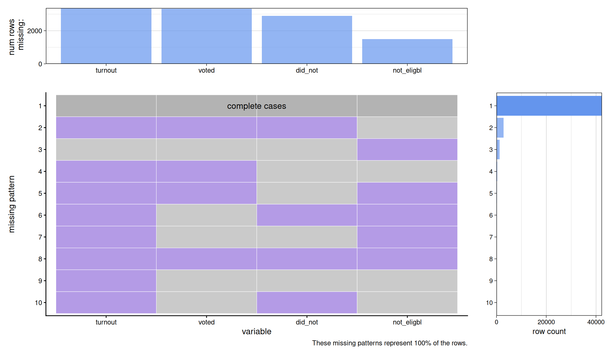
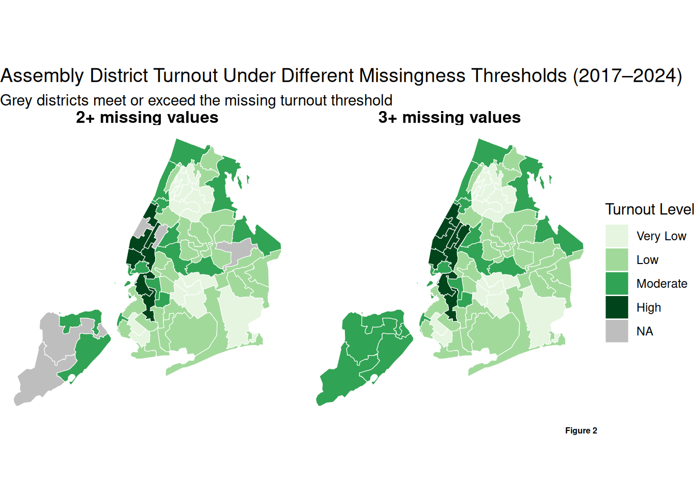
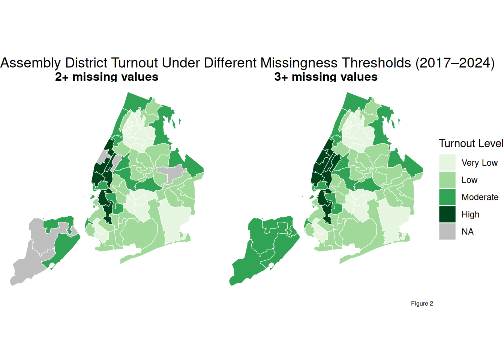
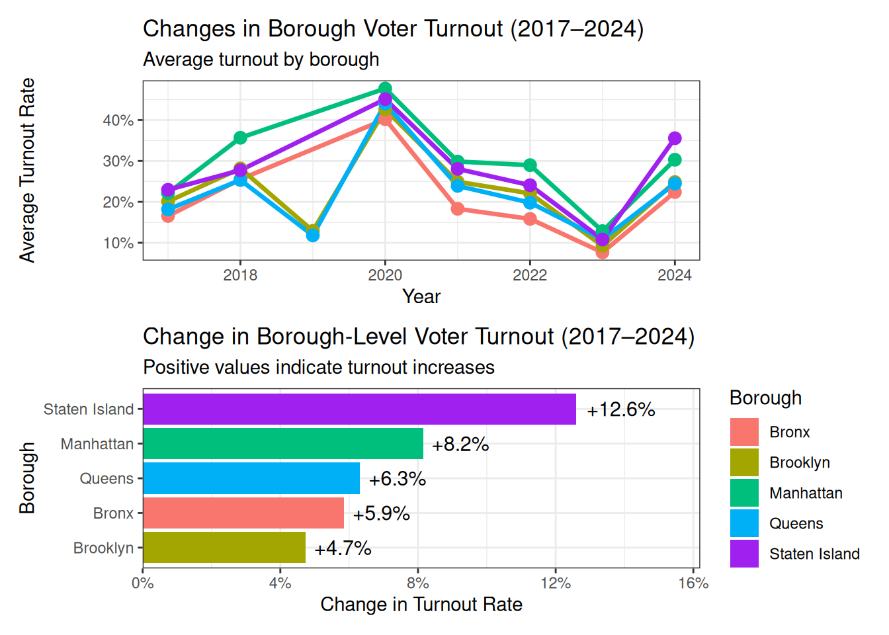
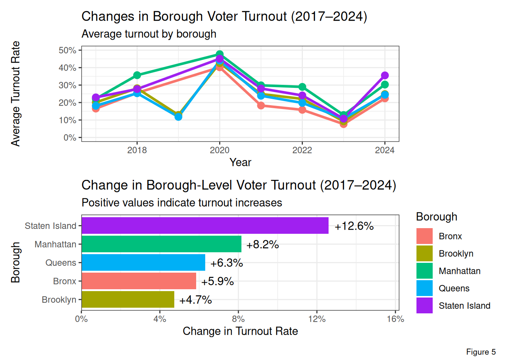
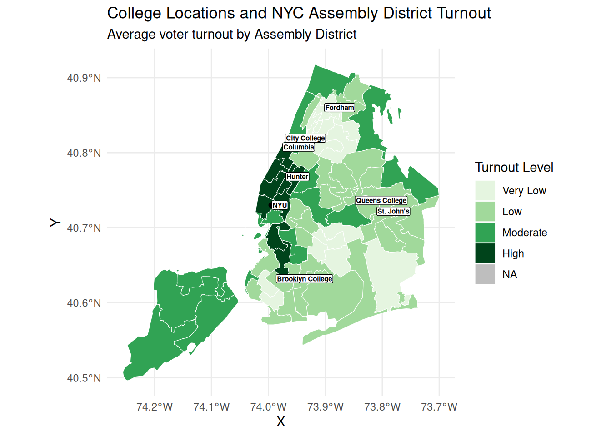
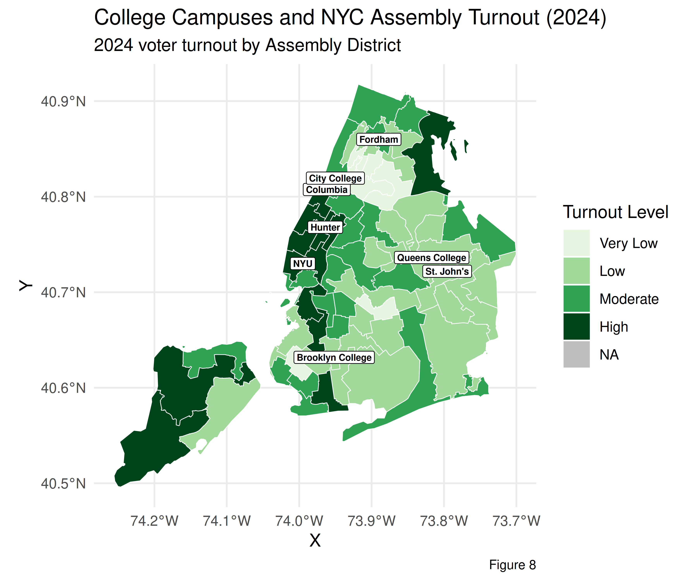
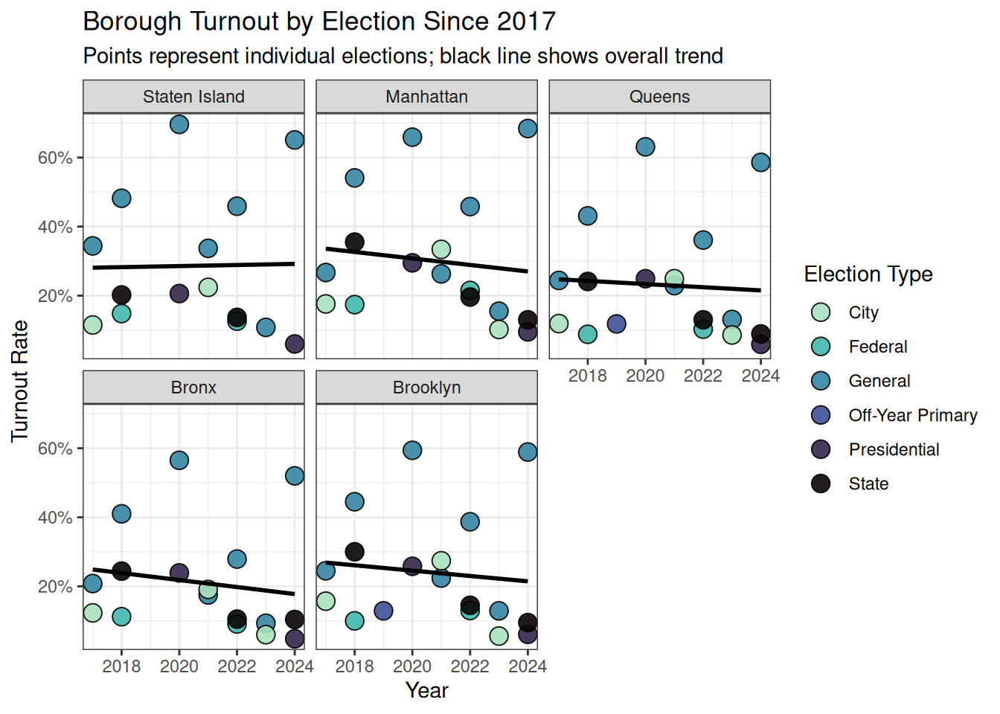
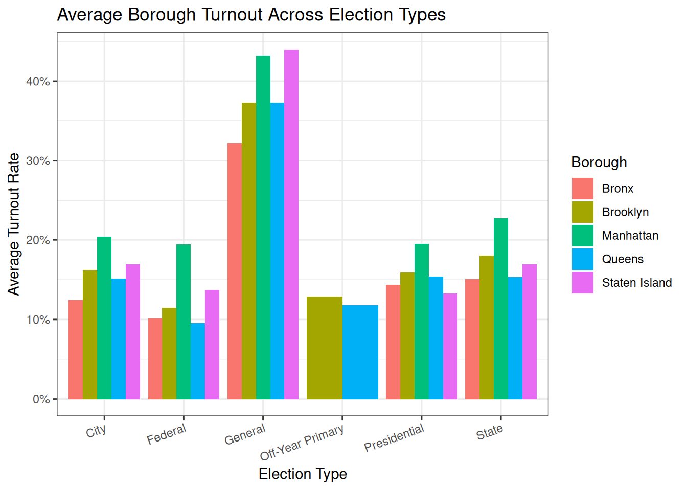
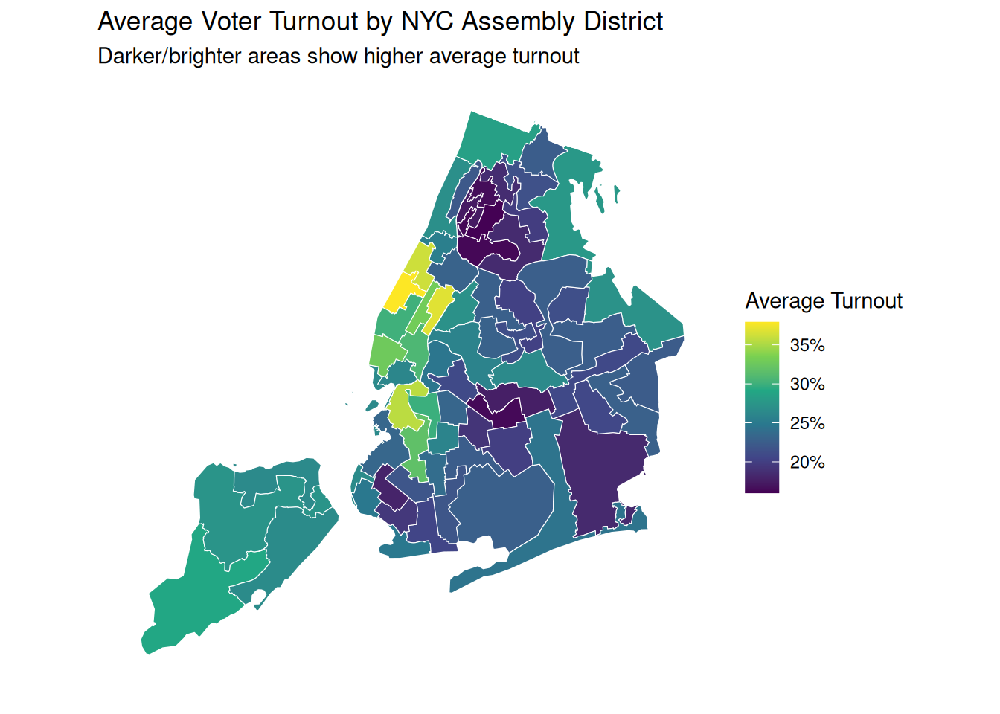

library(readr)
library(ggplot2)
data <- read_csv("data/voter_turnout_data.csv")12 NYC voter turnout
Shawna Lane
12.1 Introduction
As a Political Science-Statistics student with an interest in local government, I felt compelled to analyze how Voter Turnout levels vary across regions, years, and election cycles in NYC. Many of my commitments outside of school also surround issues of political participation, which have led me to analyze the factors that contribute do differences in civic participation. As a result, this project intends to use NYC Open Data’s Historical Voter Turnout Dataset to visualize such patterns. Voter turnout is represented by the percentage of voters who are eligible to participate in elections and proceed to do so. It is one of the primary measures of civic involvevemt, and has proven particularly interesting to study in NYC, due to the level of racial, ethnic, educational, and economic diversity in the city. By examining these patterns, we can better understand which communities are more or less politically involved, and gain insight into the systemic barries that may be restricting such partcipation. We may also obtain information on how major events influence voter turnout.Thus, the analysis will be structured around the following thematic questions:
Which NYC boroughs have experienced the largest change in voter turnout from 2017 to present day?
How does voter turnout differ between levels of election? (State, Local, and Presidential Elections across the city)
How does voter turnout in the Assembly and Congressional districts around Columbia University’s Morningside campus compare to turnout in areas surrouding other NYC college campuses, and what does this suggest about the interaction between civic participation and school demographic makeup?
12.2 Data
12.2.1 Description
The dataset explored in this project was published by the New York City Campaign Finance Board (CFB) through NYC Open Data. The data are collected through voter turnout calculations from theNew York City Board of Elections voter registration file and voter history file. The overall dataset to be analyze is titled “Historical Voter Turnout” and features NYC voter turnout patterns from 2017 to present-day. The dataset geographic levels range from citywide analysis, to bourough-specific, and political districts. The dataset is updated annually and the most recent change was publicized on December 19th, 2025. One benefit to analyzing data provided and maintained by a city agency is that it provides a comprehensive and reliable source of information that can be easily accessed. The data is presented in a table with dimensions of approximately 47,000 rows and 9 columns, such that each row represents the overall voter turnout information for one grographic area within a given election. For example, the first row may represent turnout data for Assembly District (geo_level) 23 (geo_unit) during the 2024 Presidential Primary (election). We learn the number of residents who voted (voted), the number of eligible voters who did not participate (did_not_vote),the statistics for those uneligible to vote (not_eligible_to_vote), turnout percentage (turnout), and the date (election_date) and year (year) of the election.The columns categorize this information in distinct variables for analysis.Most of the quantitative variables are stored as numeric values (dbl), while categirical variables are treated as characters (chr). A few concerns arose as I’ve proceeded with data analysis. The variables (voted), (did_not_vote), and (turnout) were labeled as “Text” on the NYC Open Data website, although they were imported into R as numeric because they contain quantiative values. This required me to ensure that the data being analyzed correctly matched the method used to examine it, therefore avoiding treating quantiative variables as categorical although they were vaguely labeled text. Another problem is that the dataset does not provide a clear explanation for how rejected or invalid ballots are handles. Therefore, the (voted) variable may not fully reflect the total number of ballots cast in an election versus those actually counted. Missing data will be analyzed in a subsequent section. LABEL FIGURESSSS
Data link: NYC Open Data – Historical Voter Turnout
CSV/API source: Download the Historical Voter Turnout CSV dataset
12.2.2 Missing value analysis
library(tidyverse)
missing_summary <- data |>
summarise(across(everything(), ~ sum(is.na(.)))) |>
pivot_longer(
cols = everything(),
names_to = "variable",
values_to = "missing_count"
) |>
arrange(desc(missing_count))
ggplot(missing_summary, aes(x = reorder(variable, missing_count), y = missing_count)) +
geom_col(fill = "lightblue") +
coord_flip() +
labs(
title = "Missing Values by Variable",
x = "Variable",
y = "Number of Missing Values"
) +
theme_bw()
library(redav)
data_missing <- data |>
rename(
did_not = did_not_vote,
not_eligible = not_eligible_to_vote,
date = election_date
)
plot_missing(
data_missing,
percent = FALSE,
num_char = 8
)
Which graph should I use??
data |>
mutate(turnout_missing = is.na(turnout)) |>
ggplot(aes(x = factor(year), fill = turnout_missing)) +
geom_bar(position = "fill") +
labs(
title = "Proportion of Missing Turnout Values by Year",
x = "Year",
y = "Proportion",
fill = "Turnout Missing"
) +
scale_fill_manual(values = c("lightblue", "darkblue")) +
theme_bw()
data |>
mutate(turnout_missing = is.na(turnout)) |>
ggplot(
aes(x = factor(year), fill = turnout_missing)
) +
geom_bar(position = "fill") +
facet_wrap(~ geo_level) +
scale_fill_manual(
values = c(
"FALSE" = "lightblue",
"TRUE" = "darkblue"
),
labels = c(
"Not Missing",
"Missing"
)
) +
labs(
title = "Missing Turnout Values by Year and Geographic Level",
x = "Election Year",
y = "Proportion",
fill = "Turnout Value"
) +
theme_bw() +
theme(
legend.position = "top",
axis.text.x = element_text(angle = 45, hjust = 1)
)
missing_turnout_summary <- data |>
group_by(year, geo_level) |>
summarise(
missing_turnout = sum(is.na(turnout)),
total = n(),
percent_missing = missing_turnout / total,
.groups = "drop"
) |>
mutate(
geo_level = factor(
geo_level,
levels = c(
"Election District",
"Assembly District",
"Council District",
"Congress District",
"Senate District",
"Borough",
"Citywide"
)
)
)
ggplot(
missing_turnout_summary,
aes(
x = factor(year),
y = percent_missing,
fill = geo_level
)
) +
geom_col(position = "dodge") +
scale_fill_viridis_d(
option = "mako",
direction = -1,
end = 0.9
) +
scale_y_continuous(
labels = scales::percent_format()
) +
labs(
title = "Percent of Missing Turnout Values by Year",
x = "Election Year",
y = "Percent Missing",
fill = "Geographic Level"
) +
theme_bw()
ggplot(map_data) +
geom_sf(aes(fill = turnout_group), color = "white") +
scale_fill_manual(
values = c(
"Very Low" = "#E5F5E0",
"Low" = "#A1D99B",
"Moderate" = "#31A354",
"High" = "#00441B"
),
na.value = "lightgrey"
) +
coord_sf(
xlim = c(-74.3, -73.65),
ylim = c(40.45, 40.95),
expand = FALSE
) +
labs(
title = "NYC Voter Turnout: Missing Data Included",
fill = "Turnout Level"
) +
theme_minimal()Error in `ggplot()`:
! `data` cannot be a function.
ℹ Have you misspelled the `data` argument in `ggplot()`?12.3 Results
12.3.1 Changes in Voter Turnout From 2017
Guiding Question: Which NYC boroughs have experienced the largest change in voter turnout from 2017 to present day?
borough_yearly <- data |>
filter(
geo_level == "Borough",
!is.na(turnout)
) |>
group_by(geo_unit, year) |>
summarise(
average_turnout = mean(turnout),
.groups = "drop"
)
borough_colors <- c(
"Bronx" = "#F8766D",
"Brooklyn" = "#A3A500",
"Manhattan" = "#00BF7D",
"Queens" = "#00B0F6",
"Staten Island" = "#E76BF3"
)
ggplot(
borough_yearly,
aes(
x = year,
y = average_turnout,
color = geo_unit
)
) +
geom_line(linewidth = 1.2) +
geom_point(size = 3) +
scale_color_manual(values = borough_colors) +
scale_y_continuous(
labels = scales::percent_format(accuracy = 1)
) +
labs(
title = "Changes in Borough Voter Turnout Over Time",
subtitle = "Average turnout by borough, 2017–2024",
x = "Year",
y = "Average Turnout Rate",
color = "Borough"
) +
theme_bw()
borough_change <- data |>
filter(
geo_level == "Borough",
!is.na(turnout)
) |>
group_by(geo_unit, year) |>
summarise(
turnout = mean(turnout),
.groups = "drop"
) |>
group_by(geo_unit) |>
summarise(
first_turnout = turnout[year == 2017],
last_turnout = turnout[year == 2024],
turnout_change = last_turnout - first_turnout,
.groups = "drop"
)borough_colors <- c(
"Bronx" = "#F8766D",
"Brooklyn" = "#A3A500",
"Manhattan" = "#00BF7D",
"Queens" = "#00B0F6",
"Staten Island" = "#E76BF3"
)
ggplot(
borough_change,
aes(
x = reorder(geo_unit, turnout_change),
y = turnout_change,
fill = geo_unit
)
) +
geom_col() +
geom_text(
aes(
label = round(turnout_change, 3)
),
hjust = -0.2,
size = 4
) +
coord_flip() +
scale_fill_manual(values = borough_colors) +
geom_hline(
yintercept = 0,
color = "black"
) +
labs(
title = "Change in Borough Voter Turnout (2017–2024)",
subtitle = "Comparison between turnout rates in 2017 and 2024",
x = "Borough",
y = "Change in Turnout Rate",
fill = "Borough"
) +
theme_bw()
borough_elections <- data |>
filter(
geo_level == "Borough",
!is.na(turnout)
) |>
mutate(
election_category = case_when(
str_detect(election, "Presidential") ~ "Presidential",
str_detect(election, "Federal") ~ "Federal",
str_detect(election, "State") ~ "State",
str_detect(election, "City") ~ "City",
str_detect(election, "Off-Year Primary") ~ "Off-Year Primary",
str_detect(election, "General") ~ "General",
TRUE ~ "Other"
)
)borough_elections$geo_unit <- factor(
borough_elections$geo_unit,
levels = c(
"Staten Island",
"Manhattan",
"Queens",
"Bronx",
"Brooklyn"
)
)
ggplot(
borough_elections,
aes(
x = year,
y = turnout
)
) +
geom_point(
aes(fill = election_category),
shape = 21,
size = 4,
color = "black",
alpha = 0.9
) +
geom_smooth(
aes(group = 1),
method = "lm",
se = FALSE,
color = "black",
linewidth = 1
) +
facet_wrap(~ geo_unit) +
scale_fill_viridis_d(
option = "mako",
direction = -1,
end = 0.9
) +
scale_y_continuous(
labels = scales::percent_format(accuracy = 1)
) +
labs(
title = "Borough Turnout by Election Since 2017",
subtitle = "Points represent individual elections; black line shows overall trend",
x = "Year",
y = "Turnout Rate",
fill = "Election Type"
) +
theme_bw()
How did the COVID-19 pandemic of 2020 impact voter turnout in NYC? In other words, did election turnout levels during the lockdown differ from those held before or after the pandemic?
12.3.2 Party Affiliation and Political Participation
Guiding Question: How does voter turnout differ between levels of election? (State, Local, and Presidential Elections across the city). WANT TO ADD ONE MORE GRAPH
election_turnout <- data |>
filter(geo_level == "Borough") |>
filter(!is.na(turnout)) |>
mutate(
election_category = case_when(
str_detect(election, "Presidential") ~ "Presidential",
str_detect(election, "Federal") ~ "Federal",
str_detect(election, "State") ~ "State",
str_detect(election, "City") ~ "City",
str_detect(election, "Off-Year Primary") ~ "Off-Year Primary",
str_detect(election, "General") ~ "General",
TRUE ~ "Other"
)
) |>
group_by(election_category, geo_unit) |>
summarise(
average_turnout = mean(turnout, na.rm = TRUE),
.groups = "drop"
)
ggplot(
election_turnout,
aes(
x = election_category,
y = average_turnout,
fill = geo_unit
)
) +
geom_col(position = "dodge") +
scale_fill_manual(values = borough_colors) +
scale_y_continuous(
labels = scales::percent_format(accuracy = 1)
) +
labs(
title = "Average Borough Turnout Across Election Types",
x = "Election Type",
y = "Average Turnout Rate",
fill = "Borough"
) +
theme_bw() +
theme(
axis.text.x = element_text(angle = 20, hjust = 1)
)
12.3.3 Columbia and Surrounding areas
Guiding Question: How does voter turnout in the Assembly and Congressional districts around Columbia University’s Morningside campus compare to turnout in areas surrouding other NYC college campuses, and what does this suggest about the interaction between civic participation and school demographic makeup?
library(tidyverse)
library(sf)
library(tigris)
library(scales)
options(tigris_use_cache = TRUE)
nyc_boroughs <- counties(state = "NY", cb = TRUE) |>
filter(NAME %in% c("Bronx", "Kings", "New York", "Queens", "Richmond")) |>
mutate(
borough = recode(
NAME,
"Kings" = "Brooklyn",
"New York" = "Manhattan",
"Richmond" = "Staten Island",
.default = NAME
)
)
|
| | 0%
|
| | 1%
|
|= | 1%
|
|= | 2%
|
|== | 2%
|
|== | 3%
|
|== | 4%
|
|=== | 4%
|
|=== | 5%
|
|==== | 5%
|
|==== | 6%
|
|===== | 7%
|
|===== | 8%
|
|====== | 8%
|
|====== | 9%
|
|======= | 10%
|
|======== | 11%
|
|======== | 12%
|
|========= | 13%
|
|========== | 14%
|
|========== | 15%
|
|=========== | 15%
|
|=========== | 16%
|
|============ | 16%
|
|============ | 17%
|
|============= | 18%
|
|============= | 19%
|
|============== | 20%
|
|============== | 21%
|
|=============== | 21%
|
|=============== | 22%
|
|================ | 22%
|
|================ | 23%
|
|================= | 24%
|
|================= | 25%
|
|================== | 25%
|
|================== | 26%
|
|=================== | 27%
|
|=================== | 28%
|
|==================== | 28%
|
|==================== | 29%
|
|===================== | 30%
|
|===================== | 31%
|
|====================== | 31%
|
|====================== | 32%
|
|======================= | 33%
|
|======================== | 34%
|
|======================== | 35%
|
|========================= | 35%
|
|========================= | 36%
|
|========================== | 37%
|
|=========================== | 38%
|
|=========================== | 39%
|
|============================ | 40%
|
|============================= | 41%
|
|============================== | 42%
|
|============================== | 43%
|
|=============================== | 44%
|
|=============================== | 45%
|
|================================ | 46%
|
|================================= | 47%
|
|================================== | 48%
|
|=================================== | 49%
|
|==================================== | 51%
|
|===================================== | 53%
|
|====================================== | 54%
|
|====================================== | 55%
|
|======================================= | 55%
|
|======================================= | 56%
|
|======================================== | 56%
|
|========================================= | 58%
|
|========================================= | 59%
|
|========================================== | 59%
|
|========================================== | 60%
|
|=========================================== | 61%
|
|============================================== | 66%
|
|==================================================== | 75%
|
|===================================================== | 76%
|
|============================================================ | 86%
|
|============================================================= | 87%
|
|============================================================= | 88%
|
|============================================================== | 88%
|
|======================================================================| 99%
|
|======================================================================| 100%ny_assembly <- state_legislative_districts(
state = "NY",
house = "lower",
year = 2024
)
|
| | 0%
|
|======= | 10%
|
|==================== | 29%
|
|======================= | 33%
|
|========================= | 36%
|
|============================== | 43%
|
|=================================== | 50%
|
|==================================== | 51%
|
|============================================== | 65%
|
|=================================================== | 73%
|
|========================================================== | 83%
|
|============================================================== | 89%
|
|======================================================================| 100%assembly_turnout <- data |>
filter(geo_level == "Assembly District", !is.na(turnout)) |>
group_by(geo_unit) |>
summarise(
avg_turnout = mean(turnout),
.groups = "drop"
) |>
mutate(Geo_Unit = as.character(geo_unit))
assembly_map <- ny_assembly |>
mutate(Geo_Unit = as.character(as.numeric(SLDLST))) |>
left_join(assembly_turnout, by = "Geo_Unit")
assembly_nyc <- st_intersection(
assembly_map,
nyc_boroughs
)
ggplot(assembly_nyc) +
geom_sf(
aes(fill = avg_turnout),
color = "white",
linewidth = 0.2
) +
coord_sf(
xlim = c(-74.3, -73.65),
ylim = c(40.45, 40.95),
expand = FALSE
) +
scale_fill_viridis_c(
option = "viridis",
labels = percent_format(accuracy = 1),
na.value = "grey80"
) +
labs(
title = "Average Voter Turnout by NYC Assembly District",
subtitle = "Darker/brighter areas show higher average turnout",
fill = "Average Turnout"
) +
theme_void()